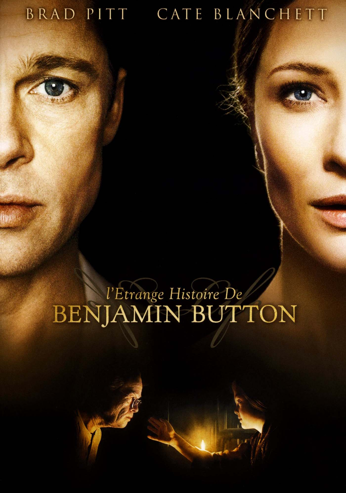

RÉALISATION
David Fincher

"Curieux destin que le mien". Ainsi commence l'étrange histoire de Benjamin Button, cet homme qui naquit à 80
ans et vécut sa vie à l'envers, sans pouvoir arrêter le cours du temps. Situé à La Nouvelle-Orléans et adapté
d'une nouvelle de F. Scott Fitzgerald, le film suit ses tribulations de 1918 à nos jours.
BRAD PITT
CATE BLANCHETT
JULIA ORMOND
TARAJI P. HENSON
5H13